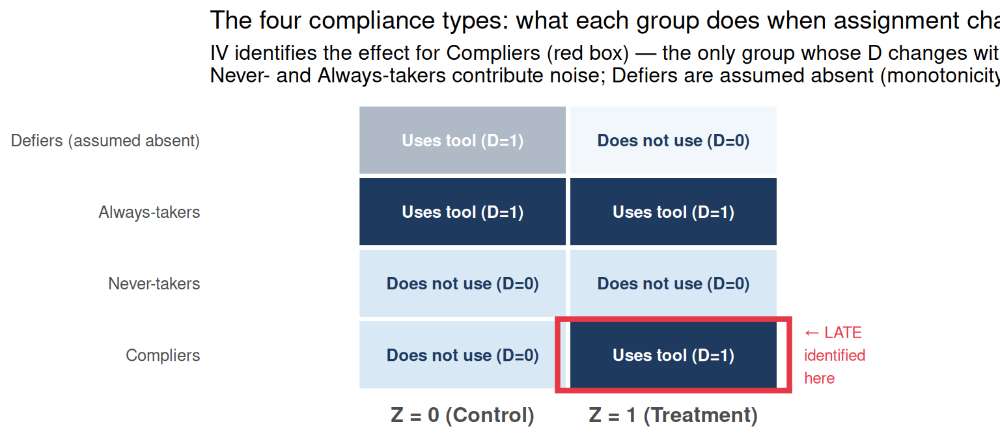

Code
# Visual illustration of the four compliance types
compliance_grid <- tibble(
type = rep(c("Compliers", "Never-takers", "Always-takers", "Defiers (assumed absent)"), each = 2),
condition = rep(c("Z = 0 (Control)", "Z = 1 (Treatment)"), times = 4),
D = c(0, 1, # Compliers: 0 when control, 1 when treatment
0, 0, # Never-takers: always 0
1, 1, # Always-takers: always 1
1, 0), # Defiers: opposite of assignment
affected = c(TRUE, TRUE, # Compliers are affected
FALSE, FALSE, # Never-takers not affected
FALSE, FALSE, # Always-takers not affected
TRUE, TRUE) # Defiers are affected (but assumed away)
) |>
mutate(
D_label = ifelse(D == 1, "Uses tool (D=1)", "Does not use (D=0)"),
type = factor(type, levels = c("Compliers", "Never-takers",
"Always-takers", "Defiers (assumed absent)")),
condition = factor(condition, levels = c("Z = 0 (Control)", "Z = 1 (Treatment)"))
)
fill_colors <- c("Uses tool (D=1)" = "#1e3a5f",
"Does not use (D=0)" = "#d9e8f5")
text_colors <- c("Uses tool (D=1)" = "white",
"Does not use (D=0)" = "#1e3a5f")
ggplot(compliance_grid,
aes(x = condition, y = type, fill = D_label)) +
geom_tile(color = "white", linewidth = 1.2, aes(alpha = ifelse(type == "Defiers (assumed absent)", 0.35, 1))) +
geom_text(aes(label = D_label, color = D_label), size = 3.4, fontface = "bold") +
# Highlight complier column change
annotate("rect", xmin = 1.45, xmax = 2.55, ymin = 0.5, ymax = 1.5,
fill = NA, color = "#e63946", linewidth = 1.5) +
annotate("text", x = 2.62, y = 1, label = "\u2190 LATE\nidentified\nhere",
hjust = 0, size = 3.2, color = "#e63946", linewidth = 0.8) +
scale_fill_manual(values = fill_colors) +
scale_color_manual(values = text_colors) +
scale_alpha_identity() +
coord_cartesian(xlim = c(0.4, 2.9)) +
labs(
title = "The four compliance types: what each group does when assignment changes",
subtitle = "IV identifies the effect for Compliers (red box) — the only group whose D changes with Z.\nNever- and Always-takers contribute noise; Defiers are assumed absent (monotonicity).",
x = NULL, y = NULL
) +
theme_minimal(base_size = 12) +
theme(legend.position = "none",
panel.grid = element_blank(),
axis.text.x = element_text(face = "bold", size = 12))